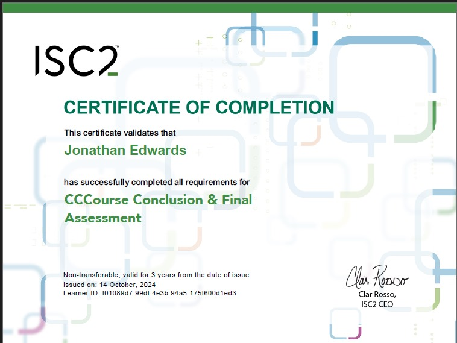

My Experience in Ethical Hacking
With a passion for cybersecurity, I have explored various aspects of ethical hacking, such as penetration testing, vulnerability assessments, and security analysis. I've worked with tools like Kali Linux, Metasploit, and Wireshark to ensure that systems are secure and protected against attacks.
ISC2 Certification
This certification from ISC2 acknowledges my skills and expertise in CYBERSECURITY. I have completed several modules focused on cybersecurity, including penetration testing, vulnerability assessment, and security analysis.
Currently I am a Cisco student expanding my knowledge in ethical hacking and penetration testing, learning the advanced tools to secure IT systems, web applications and company data.
Ethical Hacking Projects
Project 1: Penetration Testing on Web Applications
Using tools like Burp Suite and OWASP ZAP, I performed penetration testing on various web applications to identify vulnerabilities, including SQL injection, XSS, and more.